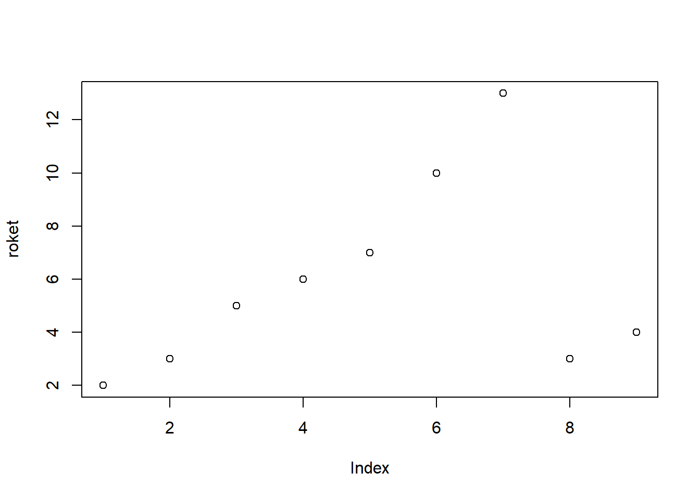
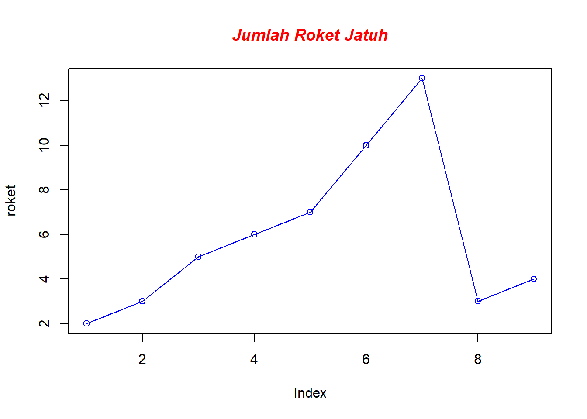
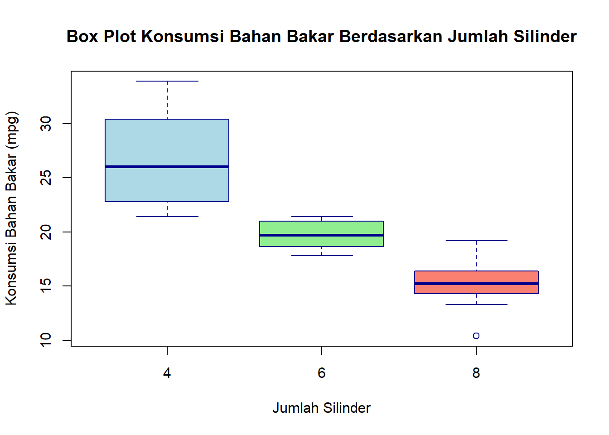
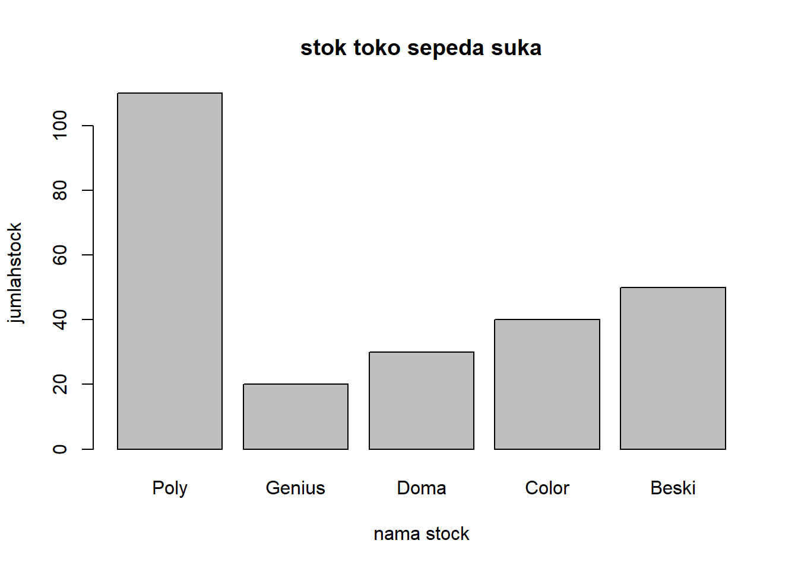
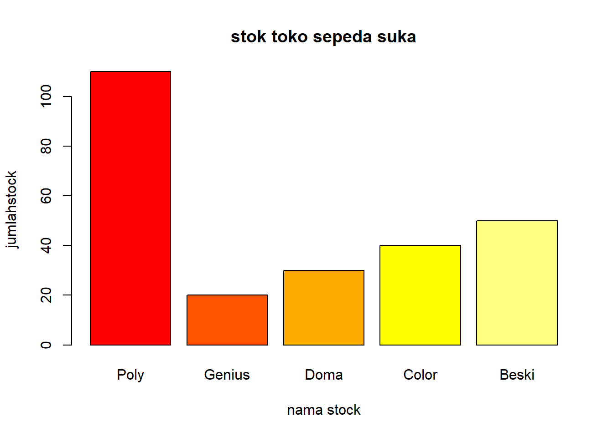
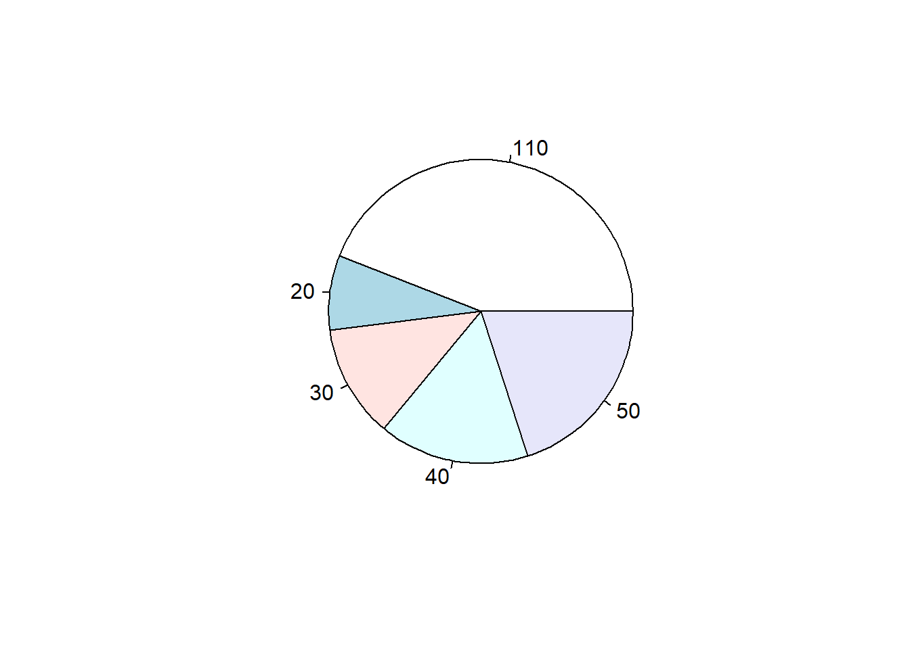
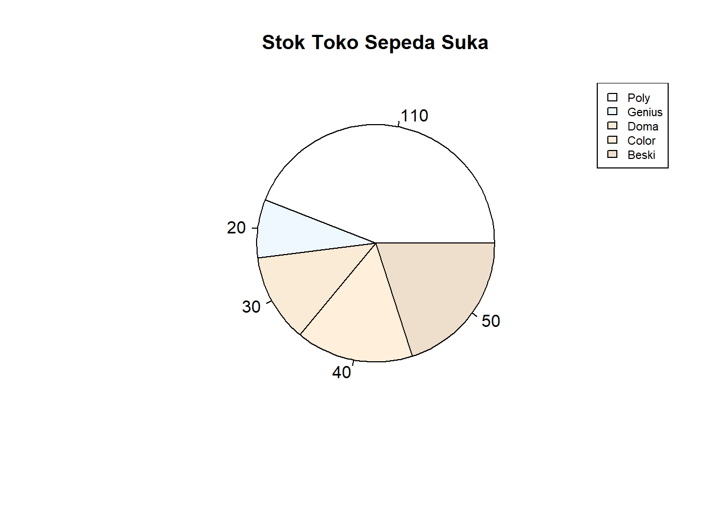

Chapter 7 Penyajian Data
7.1 Pengantar
Setelah data kita kumpulkan maka kita bisa melakukan hal untuk menyajikan data karena seperti disebutkan bahwa data itu ada di mana-mana tetapi tidak bisa dibaca oleh ke semua orang karenanya data perlu dibentuk sajikan dalam beberapa bentuk yaitu setidaknya tabel dan grafik. Bentuk penyajian data ini untuk bisa dibaca oleh orang yang berkepentingan untuk membaca data tersebut memang tidak semua data itu adalah bebas kecuali memang data yang harus diungkap kepada publik harus diberikan penjelasan sejelas-jelasnya kepada para orang yang membutuhkan data tersebut. Tentunya penting sekali seorang untuk menyajikan data agar bisa terbaca itu maka disajikan dalam bentuk yang mudah dibaca dan mudah dimengerti oleh penggunanya tentu saja. Kalau bagi pengguna orang yang berintelektual maka cukup bisa disajikan dalam bentuk yang cukup unik tetapi kalau dibutuhkan kepada masyarakat pada umumnya harus disajikan secara bentuk umum sehingga tidak ada rasa seseorang yang disembunyikan informasi yang penting bagi kepentingan publik ini sesuai dengan undang-undang keterbukaan informasi tersebut. Tentu tidak semua orang bisa menyajikan data dan terkadang dengan bentuk penyajian data yang tidak bisa atau tidak bisa menyajikan data akan memberikan satu interprestasi yang salah di kalangan masyarakat bisa jadi atau penggunaannya usernya dengan penyajian yang salah bisa jadi akan membuat suatu keputusan yang salah juga karena berdasarkan informasi yang salah yang keliru maka akan menghasilkan informasi yang keliru juga
Penyajian data yang paling penting adalah tabel dari tabel bentuknya itu sederhana setelah kita mengumpulkan data tersebut kita akan mengkompilasikan atau mengumpulkan data-data yang sejenis dan dimasukkan dalam kategori tertentu misalnya berapa jumlah siswa yang ada di kampus. itu akan dibagi dalam beberapa kategori misalnya kategori tahun angkatan dari angkatan pertama sampai angkatan ke-4 kemudian juga dibagi lagi menjadi kategori beberapa yakni seperti jurusan ataupun program studi tersebut bisa saja manajemen, akuntansi, ekonomi, komunikasi, administrasi bisnis ilmu politik dan ilmu Hukum Kalau kita membaca tabel maka kita harus dengan melihat hati-hati itu semuanya harus perkaranya adalah hati-hati karena mengenai masalah data agar tidak terjadi suatu kesalahpahaman dalam pengambilan keputusan dengan membaca tabel ini sebenarnya kita harus meniti satu demi satu kategori sehingga kita dapat menyimpulkan apa yang kategori yang mempunyai paling banyak misalnya kita di suatu daerah apa suatu produk yang paling laku di daerah tersebut maka mau tidak mau kita harus melihat seluruh daerah yang mempunyai kategori ini nggak mungkin tidak mudah seperti ini ya terlebih kalau jumlah tabelnya itu banyak sekali nah karenanya seorang itu harus bisa mampu menjanjikan data dengan bentuk yang bisa diterima oleh pengguna tentu kalau penggunanya akademisi ya berbeda dengan pengguna pada masyarakat harus disesuaikan dengan membuat penyajian data yang bisa digunakan oleh pengguna (user). Dalam membuat tabel kita akan melihat bahwa pada bagian-bagian pertama yang akan harus dipenuhi setidaknya oleh pembuat tabel itu bukan hanya sebuah kotak-kota yang berisi kategori tetapi dengan angka tetapi juga lebih dahulu ada bagian bisa jadi kalau orang yang sudah memahami maka halnitu tidak menjadi masalah sebab ia mampu untuk menerjemahkan dan menginterpretasikan apa yang ada dalam tabel tersebut.
Tentu ada beberapa hal atau bentuk penyajian data yang biasa digunakan yaitu pertama grafis ini suatu gambar yang bisa bentuk garis kotak-kotak tersebut dengan adanya grafik ini seseorang bisa langsung membaca data dengan baik tentu untuk bentuknya tidak semua bisa seperti grafik kotak atau box plot itu bagi saya bagi penulis itu sangat susah untuk diterjemahkan karena ada satu kotak tapi ada garis-garis tertentu yang mungkin tidak akan bisa dibaca oleh orang yang terpajak sekalipun tetapi dengan nanti dikatakan kalau grafik yang berbentuk sederhana seperti grafik garis batang atau lingkaran itu hampir semua orang dan kebanyakan orang yang sudah bersekolah sudah bisa membaca maksud dari data-data tersebut. Harga baru tidak dipungkiri bahwa dengan adanya grafik membuat tulisan menarik dan dia seperti merangkum dari semua deskripsi data-data yang sudah diolah ke dalam bentuk yang sangat sederhana sekali bisa jadi dari 5 tulisan maksudnya 5 halaman tulisan akan bisa tergambarkan lewat satu gambar saja yang sangat sederhana tersebut gitu daripada menggambarkan dalam bentuk tulisan yangbanyak sekali. Grafik apa yang akan saya pilih dalam penyajian data. Itu bergantung dengan yang menjadi kebutuhan. Dari penyajian data tersebut dan tentu juga akan berpengaruh pada data itu sendiri. Ada Bebeapa daata yang tidak cocok dengan jenis grafik. Misalnya grafik garis tidak cocok diterapkan pada data cross section penjualan makanan di sebuah toko dalam waktu satau periode (bisa tahun, bulan dan hari) Jenis grafik banyak sekali. Apalagi kalau banyak sekali perangkat lunak yang dapat untuk membuat suatu grafik yang bagus sekali namun pada dasarnya grafik ini terbagi dalam beberapa model seperti :
7.2 Grafik Garis
Grafik ini adalah grafik yang paling sederhana yang dapat untuk menggambarkan suatu perkembangan suatu data. Yang ada. Dalam grafik garis kita akan melihat trend yang meningkat karena suatu kenaikan atau data yang meningkat perlahan-lahan ataupun bisa peningkatan tersebut melonjak begitu tajam karena daya yang meningkat aecara tajam.

#jika mau merubah gaya grafik
plot(roket,type="o",col="blue")
title(main="Jumlah Roket Jatuh",col.main="red",font.main=4)
Untuk grafik garis maka yang paling sesuai dengan karakteristik data adalah data time series. Bisa juga data panel yang menunjukka. . apakah kalau data cross section bisa diubah. Maslaah mengubah tidak sulit karena hal tersebut dapat diubah dengan cara memasukkan nilai dan grafik Analisis grafik untuk mengidentifikasi pola, tren, atau perubahan seiring waktu . Visualisasi memberikan interprestasi dari peningkatan sesuatu data atau penurunan.
7.3 Box Plot
Box Plot adalah Plot atau grafik dalam bentuk kotak atau box. Penampilannya seperti kotak mengambang yang ada bagian tengahnya tersebut. Untuk mengenali grafik ini maka ada bagian seperti box yang dibagi dua dan juga ada seperti tali di bagian tengah yang disebut juga whiskers. Bagi Penulis Box Plot cukup merepotkan bagi penulis dan penulis berkeyakinan bahkan mahasiswa kebanyakan tidak dapat mebaca plot tersebut karena memang jarang digunakan apalagi kalau orang umum. Bentuknya kurang umum dibandingan grafik garis, batang, lingkaran maupun gamvar , Sedangkan grafik di sana adalah termausk grafik yang mudah dibca dengan orang yang awam. KIta melihat kota sebagai representasi dari nilai Kuartil 3 sampain nilai Kuartil satu . Khusus Box plot ini untuk mencari bentuk dari sekumpulan data tersebut. Sekumpulan data atau satu set adalah biasanya yang dijadikan sample . ini digunakan untuk mendeteksi outlier yang biasanya cukup merepotkan adalah data yang berbeda dengan kebanyakan atau juga data ekstrim yang ada dalam sekumpulan data. data outlier adalah data yang ada dalam sekumpulan namun mempunyai nilai yang jauh berbeda dalam rentangan Kuartil satu Maupun kuartil 3 sedangkan nilai ekstrim adalah nilai yang sudah sangat jauh beda. Ini penting karena ada memang data yang dipilih-pilih unuk kesesuaian kegunaan data. Untuk mendeteksi outlier kita melihat adanya whisker di atas ataupun dibawah box tersebut. kalau ada nlai whisker yang panjang sekalai melebih tiga kali lebar kotak maka itu mengindikasikan adanya suatu nilai ekstrim.
# Menggunakan data bawaan mtcars
data(mtcars)
# Membuat box plot untuk menunjukkan distribusi konsumsi bahan bakar (mpg) berdasarkan jumlah silinder (cyl)
boxplot(mpg ~ cyl,
data = mtcars,
main = "Box Plot Konsumsi Bahan Bakar Berdasarkan Jumlah Silinder",
xlab = "Jumlah Silinder",
ylab = "Konsumsi Bahan Bakar (mpg)",
col = c("lightblue", "lightgreen", "salmon"),
border = "darkblue")
7.4 Grafik Batang
Sesuai dengan namanya grafik batang adalah berisi batang atau persegi yang dapat untuk mewakili atau representasi data Pembuatan grafik batang dapat dilakukan manual dengan rangka pembuatan manual kita bisa membuat grafik batang dengan nilai yang sudah ada di dalam tabel tersebut titik memang setiap pembuatan grafik itu tidak akan terlepas dari apa yang namanya tabel kalau kita membuat grafik sebelumnya itu.
#Membuat Data terlebih dahulu
stocktoko <-c("Poly", "Genius", "Doma", "Color", "Beski")
jumlahstock<-c(110,20,30,40,50)
#Membuat data frame
stoko<-data.frame(stocktoko,jumlahstock)
#Membuat Grafik
View(stoko)
barplot(stoko$jumlahstock,main="stok toko sepeda suka", xlab="nama stock", ylab="jumlahstock",names.arg=stoko$stocktoko)
barplot(stoko$jumlahstock,main="stok toko sepeda suka", xlab="nama stock", ylab="jumlahstock",names.arg=stoko$stocktoko,col=heat.colors(5))
Kita masih memiliki kategori apa saja yang akan kita jadikan limbah tabel misalnya suatu wilayah mempunyai penghasilan sebagai penghasilan kelapa sawit di suatu produksi kita akan membuat batang satu antara kabupaten a yang dihasilkan menjadi poros dari sumbu x atau sumbu horizontal. Kemudian beberapa jumlah dari sumbu y tersebut kalau kita mencontohkan jumlah dari produksi sawit tersebut maka yang tinggi akan diwakili oleh batang yang paling tinggi kita bisa ganti batang kelapa sawit menjadi batang sawit tentu bisa namun judulnya bukan lagi grafik batang grafik gambar dalam grafik batang ada juga grafik yang berbentuk tiga dimensi terdiri atas suatu ruang yang dalam gerakan 3 dimensi atau bahkan 4 dimensi karena itu susah akan seperti waktu atau interaktif hal itu kalau kita hanya ingin menyebabkan maksudnya dalam bentuk seperti buku Harry Potter yang gambarnya atau ilustrasi yang bergerak gitu kalau saya disuruh membuat data tentang data pribadi untuk Anda membuat tahu mau dibuat apa karena kita tidak mempunyai tujuan dalam pengumpulan data tersebut sekali untuk membuat tabel grafik tersebut. Bagi penulis, box plot cukup untuk mendapatkan penulis berkaitan kalian bahkan tidak ada yang dapat membuat box tersebut lain hanya dengan grafik garis batang atau pie dan sejenisnya merupakan grafik yang mudah dibacakan oleh orang awam sekalipun. Kita melihat kotak itu representasi daripada nilai Q3 sampai Q1 yang dinamakan interkuartil. Khusus buat untuk mencari suatu data tersebut itu mendeteksi suatu dari out layer ataupun data ekstrem yang ada sekumpulan data tersebut data output adalah data yang ada dalam tetapi nilainya berbeda masalah ada yang juga sekali dan ini penting. Karenanya menang data tersebut juga dipilah-pilah untuk kesesuaian dengan kesesuaian.
Box Plot adalah grafik dalam bentuk kotak atau box penampilan seperti kotak yang mengambang diantara tertentu dan bagiannya adalah whisker yang berada di tengah kotak tersebut sedangkan ada nilai Q3 dan Q1 kalau kita akan mencari nilai out player begitu panjang whiskernya itu bisa dia ke bawah ataupun bisa dia juga ke atas.
Membuat garis grafik dapat kita harus menyiapkan data yang akan kita persiapkan untuk grafik kita dengan individu atau juga kategori dan daya adalah data dari periode atau individual kemudian pasangkan nilai sesuai dengan pasangannya baik yang ada di sumbu x maupun juga di garis y kemudian nilai x y dipasangkan maka kita beri titik sehingga sudah dapat anda untuk menyambungkan tiap akan sebagai kita bisa membuat suatu garis apakah grafik garis berlaku untuk beda data
7.5 Grafik Pie
Grafik PIe dinamakan setelah grafik ini mirip kue Pie yang berbentuk bulat. Gambar grafik pie akan mewakillkan satu kategori saja yang dapat digambarkan kalau ada banyak kategori maka akan sulit saja. Grafik Pie ini akan memberikan suatau visualisasi yang bagus dengan warna-warna yang menarik dan kontras. Bisa juga dengan membentuk pola seperti arsiran atau pola kalau grafik pie tersebut adalah berwarna hitam dan putih. Grafik ini akan bagus kalau saja yang idterangkan mempunyai porsi yang hampir mirip seperti mempunyai elemen data hanya empat dan bagian porsi sekitar 25%. Hanya saja grafik ini akan rumit kalau elemennya lebih dari 10 namun ada yang porsi yang kecil sekalai. misalnya pada saat perhitungan suara pemilu di kpu maka akan terlihat begitu banyak sekali kalau partai-paratai yang berhasil duduk di Senayan alias Gedung MPR dengan partai yang rendah sekali. Ada setidaknya lima partai yang menyempil di bagian tersbeut. seperti grafik lainnya maka akan sulit sekali untuk menebak berapa jumlah proisinya dan mungkin bagi yang kertebatasan dalam penglihatan baik plus ataupun minus maka akan sulit juga untuk melihat seperti ini. Untuk mmebuatnya secara manual maka kita ahrus menghitung porsi dari data tersebut. Kalau sudah ada data tersedia prosi maka akan dibuat terlebih dahulu bagiannya. LIngkaran atau pie yang ada memang dibagi menurut presentasenya dengan presentase yang besar mendapatkan bagian atau poris yang lebih besar. Untuk membuat ini kita harus hitung kalau lingkaran tersebut adalah 360 derajat. Untuk membuat suatau lingjaran yang presisi maka kita mmebutuhkan mistar busur yang mungkin sudah lama tidak digunakan (gambar mistar bujur) misalnya kita menemukan kalau suatu kategori
(kategori dan elemen dijelaskan di awal) bernilai porsi 25 maka kita bisa mengkalikan angka 25% dengan 360 derajat yang hasilnya 90 derajat. Maka hal itu akan kita hitung sebagai nilai sepermpat yang bisa saja tegak atau mungkin anda memlih yang ada di bagian bawah atau atas selama intu setara dengan 90% maka itu tidak menjadi masalah.

#Menambahkan judul Grafik
pie(stoko$jumlahstock,labels=stoko$jumlahstock, main="Stok Toko Sepeda Suka",col=colors(5))
#Menambahkan Legenda
legend("topright",c("Poly","Genius","Doma","Color","Beski"),cex=0.7,fill=colors(5))
7.6 Grafik Daun atau Steam leaf
Grafik daun ini seperti bentuk pohon yang mmepunyai daun-daun. aadapun pohon terdiri yang cabang merupakan kategori dari yang kita cari. Pada data berkelompok atau mungkin data tidak berkelompok kita bisa membuatkan kelompok tersebut. Dengan grafik daun maka kita bisa menmapilkan data dalam kelompok. Batang tersebut adlah nilai yang menjdi kelas dalam distribusi frekuensi. Yang menjdi daun adalah nilai-nilai angka. Bagi yang awalnya belum pernah membaca bentuk grafik ini mungkin akan membeinggungkan anda. Namum bukan berarati angka-angka yang ada tidak mempunyai arti yang berarti angka di belakang data tersebut. jika membuat manual maka data-data ini akan sulit sebab kita harus menelsuri data-data yang menjadi anggota kelas tersebut. Pemilihan Grafik Data Setiap grafk mempunyai keistimewaaan dan kekurangan. Maka kita harus memakainya dengan bijak. Kalau grafik di BPS maka kemungkinan ada banyak yang akan menggunakan grafik berupa batang dan garis saja. Kedua grafik ini umum dan bisa menggambarkan data jenis apa saja. (Sukestiyarno, 2014) Penggunaan grafik bantang mungkin kurang menarik daripada penggunaan grafik lingkaran namun penggunaan grafik ini akan membuat lebih efisien. Efisien dalam menyakian data yang sudah tersedia.
#membuat vector data nilai kelas statistika
nilaistatistika = c(78,45,67,76,55,68,59,42,74,64)
#membuat perintah grafik daun
stem(nilaistatistika)##
## The decimal point is 1 digit(s) to the right of the |
##
## 4 | 25
## 5 | 59
## 6 | 478
## 7 | 468Dapat kita lihat nilai tersebut adalah 4 nilai dari puluhan yang merupakan nilai dari stataistika sendagnkan 2 dan 5 adalah mewakili nilia 42 dan 45 dan seterusnya ke bawah
Latihan
- Apakah jenis grafik yang dapat digunakan untuk jenis data berkala? Jelaskan?
- Jelaskan komponen dalam grafik daun? Apakah grafik ini efisien untuk data yang banyak jelaskan pendapat anda?
- Buatlah grafik pie yang terdiri dari kategori berikut Anis 52% Prabowo 25% Ganjar 16%
- Cobalah interprestasikan grafik daun yang ada di sana. Sebutkan data-data yang ada dalam grafik daun tersebut?
- Sebagai mahasiswa manajemen anda mendapatkan tugas untuk menyelidiki hal berikut:
- Harga saham yang meningkat ketika terjadinya perang Iran
- Menurunnya pemasaran seblak pada tahun ini
- Pekerja yang tetap kualitasnya meksi sudah mendapatkan uang honor tambahan
- Google trend tentang suatu trend di website